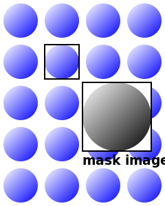

Pieces of a mask box image.
CSS Masking provides two means for partially or fully hiding portions of visual elements: masking and clipping.
Masking describes how to use another graphical element or image as a luminance or alpha mask. Typically, rendering an element via CSS or SVG can conceptually described as if the element, including its children, are drawn into a buffer and then that buffer is composited into the element's parent. Luminance and alpha masks influence the transparency of this buffer before the compositing stage.
Clipping describes the visible region of visual elements. The region can be described by using certain SVG graphics elements or basic shapes. Anything outside of this region is not rendered.
With CSS Masking it is possible to specify another graphics element, shape or image file to be used as clipping region or an luminance or alpha mask for compositing the current object into the background.
The effect of applying a mask is as if the mask images or mask sources are rendered into an off-screen image which has been initialized to transparent black. The graphical object to which the mask is applied will be painted onto the background through the mask, thus completely or partially masking out parts of the graphical object.
Masks are applied using the 'mask-image' or 'mask-box-image-source' properties.
The 'mask-image' property may reference a 'mask element' element as the mask
source.
Alternatively, for many simple uses, the 'mask-image' property may
refer directly to images to be used as mask
forgoing the need for an explicit 'mask element' element.
The 'mask' property serves as a shorthand property for 'mask-image' and other characterizing properties.
The 'mask-box-image-source' property splits a mask image into 9 pieces. The pieces may be sliced,
scaled and stretched in various ways to fit the size of the mask image area.
The 'mask-box-image' property serves as a shorthand property for 'mask-box-image-source' and other
characterizing properties.
Clipping path defines an outline (in the absence of anti-aliasing) of a visual element where everything on the "inside" of the outline is allowed to show through but everything on the outside is masked out. A clipping path is specified by vector paths or shapes.
The 'clip-path' property can reference SVG graphics element or use specified basic shapes as clipping path.
A luminance mask (middle) is applied on a shape filled with a gradient (left). This results in a masked shape (right).
This specification defines a set of CSS properties that affect the visual rendering of elements to which those properties are applied; these effects are applied after elements have been sized and positioned according to the Visual formatting model from [[!CSS21]]. Some values of these properties result in the creation of a stacking context.
The compositing model follows the SVG compositing model [[!SVG11]]: first any filter effect [[FILTER-EFFECTS]] is applied, then any clipping, masking and opacity [[CSS3COLOR]]. These effects all apply after any other CSS effects such as 'border' [[!CSS3BG]].
This specification follows the CSS property definition conventions from [[!CSS21]]. Basic shapes are defined in CSS Exclusions and Shapes Module Level 3 [[!CSS3-EXCLUSIONS]]. Value types not defined in these specifications are defined in CSS Values and Units Module Level 3 [[!CSS3VAL]].
In addition to the property-specific values listed in their definitions, all properties defined in this specification also accept the inherit keyword as their property value. For readability it has not been repeated explicitly.
When used in this specification, terms have the meanings assigned in this section.
The union of all border boxes for the element that has an associated CSS layout box and is not
in the http://www.w3.org/2000/svg namespace and its descendant elements. Or the
object bounding box [[!SVG11]], if the element does not have
an associated CSS layout box and is in the http://www.w3.org/2000/svg namespace.
(See getBoundingClientRect
[[CSSOM-VIEW]].)
In general, a coordinate system defines locations and distances on the current canvas. The current local coordinate system (also user coordinate system) is the coordinate system that is currently active and which is used to define how coordinates and lengths are located and computed, respectively, on the current canvas [[CSS3-TRANSFORMS]].
For elements that have an associated CSS layout box, the current user coordinate system has its origin at the top-left corner of the bounding client rect and one unit equals one CSS pixel. The viewport for resolving percentage values is defined by the width and height of the bounding client rect.
If the element does not have an associated CSS layout box and is in the http://www.w3.org/2000/svg
namespace, the current local coordinate system has its origin at the top-left corner of the element's
nearest viewport.
Definitions of CSS properties and values in this specification are analogous to definitions in CSS Backgrounds and Borders [[!CSS3BG]]. To avoid redundancy, this specification relies on descriptions and definitions of CSS Backgrounds and Borders. The following terms in CSS Backgrounds and Borders have the following meaning in this specification:
| Term in CSS Masking | Term in [[!CSS3BG]] |
|---|---|
| mask images | background images |
| mask painting area | background painting area |
| mask-size | background-size |
| mask-position | background-position |
| mask positioning area | background positioning area |
| mask box image area | border image area |
| Name: | mask-image |
|---|---|
| Value: | <mask-reference> |
| Initial: | none |
| Applies to: | All elements. In SVG, it applies to container elements and graphics elements |
| Inherited: | no |
| Percentages: | N/A |
| Media: | visual |
| Computed value: | as specified, but with URIs made absolute |
| Animatable: | no |
This property sets the mask image(s) or the mask source of an element. Images are drawn with the first specified one on top (closest to the user) and each subsequent image behind the previous one. Where:
<mask-reference> = <mask-image># | <mask-source>
<mask-image> = <image> | none
<mask-source> = <url> | child | <child-selector>
<child-selector> = select(<compound-selector>#)
A <mask-element> can just be specified as a single value and can not contribute to a list of <mask-reference> values. Otherwise the specified value of the property is invalid. (See examples below.)
If the URI in the ''url()'' function has a fragment identifier, the <mask-reference> is treated as <mask-source>, otherwise as <mask-image>.
If the URI reference of a mask source is not valid (e.g it points to an object that doesn't exist or the object is not a 'mask element' element), no masking is applied.
A mask image that is empty (zero width or zero height), that fails to download, is non-existent, or that cannot be displayed (e.g. because it is not in a supported image format) is ignored. No masking is applied.
See the section “Layering multiple mask images” for how 'mask-image' interacts with other comma-separated mask properties to form each mask image layer.
Some examples specifying mask images:
body { mask-image: linear-gradient(black 0%, transparent 100%) }
p { mask-image: none }
div { mask-image: url(tl.png), url(tr.png) }
Some examples of a specified mask source:
img { mask-image: url(#mask) }
span { mask-image: url(resources.svg#mask2) }
Examples of invalid mask source usages:
p { mask-image: url(#mask), url(tl.png) }
img { mask-image: url(#mask), url(resources.svg#mask2) }
A <mask-element> value that is either used together with another <mask-element> value or an <mask-image> value makes the whole specified 'mask-image' value list invalid.
| Name: | mask-source-type |
|---|---|
| Value: | <source-type># |
| Initial: | auto |
| Applies to: | All elements. In SVG, it applies to container elements and graphics elements |
| Inherited: | no |
| Percentages: | N/A |
| Media: | visual |
| Computed value: | as specified |
| Animatable: | no |
The 'mask-source-type' property indicates whether the <mask-reference> is treated as luminance mask or alpha mask. (See Calculating mask values.)
<source-type> = alpha | luminance | auto
Values have the following meanings:
If the <mask-reference> of the 'mask-image' property is of type <mask-image> the luminance values of the mask image should be used as the mask values.
If the <mask-reference> of the 'mask-image' property is of type <mask-element> the alpha values of the mask image should be used as the mask values.
In the following example, the 'mask-type' property sets the mask type value for the 'mask element' element to ''alpha''. The 'mask-image' property has a reference to this 'mask element' element and the 'mask-source-type' property has a value of ''luminance''. The 'mask-source-type' property will override the definition of 'mask-type' to ''luminance''.
<mask id="SVGMask" mask-type="alpha" maskContentUnits="objectBoundingBox">
<radialGradient id="radialFill">
<stop stop-color="white" offset="0"/>
<stop stop-color="black" offset="1"/>
</radialGradient>
<circle fill="url(#radialFill)" cx="0.5" cy="0.5" r="0.5"/>
</mask>
<style>
rect {
mask-image: url(#SVGMask);
mask-source-type: luminance;
}
</style>
<rect width="200" height="200" fill="green"/>
| Name: | mask-repeat |
|---|---|
| Value: | <repeat-style># |
| Initial: | repeat |
| Applies to: | All elements. In SVG, it applies to container elements and graphics elements |
| Inherited: | no |
| Percentages: | N/A |
| Media: | visual |
| Computed value: | A list, each item consisting of: two keywords, one per dimension |
| Animatable: | no |
Specifies how mask images are tiled after they have been sized and positioned. Where
<repeat-style> = repeat-x | repeat-y | [repeat | space | round | no-repeat]{1,2}
See Tiling Images: the 'background-repeat' property [[!CSS3BG]] for the definitions of the property values.
body {
background-color: blue;
mask-image: url(dot-mask.png) luminance;
mask-repeat: space;
}

The effect of 'space': the mask image of a dot is tiled to cover the whole mask painting area and the mask images are equally spaced.
See the section “Layering multiple mask images” for how 'mask-repeat' interacts with other comma-separated mask properties to form each mask image layer.
| Name: | mask-position |
|---|---|
| Value: | <position># |
| Initial: | 0% 0% |
| Applies to: | All elements. In SVG, it applies to container elements and graphics elements |
| Inherited: | no |
| Percentages: | refer to size of mask painting area minus size of mask image; see text |
| Media: | visual |
| Computed value: | A list, each item consisting of: two keywords representing the origin and two offsets from that origin, each given as an absolute length (if given a <length>), otherwise as a percentage. |
| Animatable: | as repeatable list of simple list of length, percentage, or calc |
Where
<position> = [ [ left | center | right | top | bottom | <percentage> | <length> ] | [ left | center | right | <percentage> | <length> ] [ top | center | bottom | <percentage> | <length> ] | [ center | [ left | right ] [ <percentage> | <length> ]? ] && [ center | [ top | bottom ] [ <percentage> | <length> ]? ] ]
See Positioning Images: the 'background-position' property [[!CSS3BG]] for the definitions of the property values.
In the example below, the (single) image is placed in the lower-right corner of the viewport.
body {
mask-image: url("logo.png");
mask-position: 100% 100%;
mask-repeat: no-repeat;
}
Mask positions can also be relative to other corners than the top left. E.g., the following puts the background image 10px from the bottom and 3em from the right:
mask-position: right 3em bottom 10px
See the section “Layering multiple mask images” for how 'mask-position' interacts with other comma-separated mask properties to form each mask image layer.
| Name: | mask-clip |
|---|---|
| Value: | <clip-box># |
| Initial: | border-box |
| Applies to: | All elements. In SVG, it applies to container elements and graphics elements |
| Inherited: | no |
| Percentages: | N/A |
| Media: | visual |
| Computed value: | as specified |
| Animatable: | no |
Determines the mask painting area, which determines the area that is affected by the mask. The painted content of an element may be resricted to this area. The syntax of the property is given with
<clip-box> = <box> | no-clip
<box> = border-box | padding-box | content-box
Values have the following meanings:
Note that there is no corresponding box for ''padding-box'' on objects without associated layout box and ''content-box'' is choosen instead.
See the section “Layering multiple mask images” for how 'mask-clip' interacts with other comma-separated mask properties to form each mask image layer.
| Name: | mask-origin |
|---|---|
| Value: | <box># |
| Initial: | padding-box |
| Applies to: | All elements. In SVG, it applies to container elements and graphics elements |
| Inherited: | no |
| Percentages: | N/A |
| Media: | visual |
| Computed value: | as specified |
| Animatable: | no |
For elements rendered as a single box, specifies the mask positioning area. For elements rendered as multiple boxes (e.g., inline boxes on several lines, boxes on several pages) specifies which boxes 'box-decoration-break' operates on to determine the mask positioning area(s).
Note that there is no corresponding box for ''padding-box'' on objects without associated layout box and ''content-box'' is choosen instead.
Note that if 'mask-clip' is ''padding-box'', 'mask-origin' is ''border-box'', 'mask-position' is ''top left'' (the initial value), and the element has a non-zero border, then the top and left of the mask image will be clipped.
See the section “Layering multiple mask images” for how 'mask-origin' interacts with other comma-separated mask properties to form each mask image layer.
| Name: | mask-size |
|---|---|
| Value: | <mask-size># |
| Initial: | auto |
| Applies to: | All elements. In SVG, it applies to container elements and graphics elements |
| Inherited: | no |
| Percentages: | see text |
| Media: | visual |
| Computed value: | as specified, but with lengths made absolute |
| Animatable: | as repeatable list of simple list of length, percentage, or calc (This means keyword values are not animatable.) |
Specifies the size of the mask images. Where
<mask-size> = [ <length> | <percentage> | auto ]{1,2} | cover | contain
See Sizing Images: the ‘background-size’ property [[!CSS3BG]] for the definitions of the property values.
See the section “Layering multiple mask images” for how 'mask-size' interacts with other comma-separated mask properties to form each mask image layer.
| Name: | mask |
|---|---|
| Value: | <mask-layer># |
| Initial: | see individual properties |
| Applies to: | All elements. In SVG, it applies to container elements and graphics elements |
| Inherited: | no |
| Percentages: | see individual properties |
| Media: | visual |
| Computed value: | see individual properties |
| Animatable: | see individual properties |
Where
<mask-layer> = <mask-reference> <source-type>? || <position> [ / <mask-size> ]? || <repeat-style> || <box> || <clip-box>
If one <box> value is present then it sets both 'mask-origin' and 'mask-clip' to that value. If two <box> values are present, then the first sets 'mask-origin' and the second 'mask-clip'.
Note that the properties 'mask-image', 'mask-repeat', 'mask-position', 'mask-clip', 'mask-origin' and 'mask-size' have no affect on 'mask element' elements.
| Name: | mask-type |
|---|---|
| Value: | luminance | alpha |
| Initial: | luminance |
| Applies to: | 'mask element' elements |
| Inherited: | no |
| Percentages: | N/A |
| Media: | visual |
| Computed value: | as specified |
| Animatable: | no |
The 'mask-type' property defines whether the content of the 'mask element' is treated as as luminance mask or alpha mask, as described in Calculating mask values.
Values have the following meanings:
The 'mask-type' property is a presentation attribute for SVG elements.
Attribute definitions:
If at least one of the attributes 'mask/x', 'mask/y', 'mask/width' or 'mask/height' are specified, the given object and the rectangle defined by 'mask/x', 'mask/y', 'mask/width' and 'mask/height' establish a current clipping path. The rendered content of the mask must be clipped by this current clipping path.
CSS properties inherit into the 'mask element' element from its ancestors; properties do not inherit from the element referencing the 'mask element' element.
'mask element' elements are never rendered directly; their only usage is as something that can be referenced using the 'mask' property. The 'opacity', 'filter' and 'display' properties do not apply to the 'mask element' element; thus, 'mask element' elements are not directly rendered even if the 'display' property is set to a value other than 'none', and 'mask element' elements are available for referencing even when the 'display' property on the 'mask element' element or any of its ancestors is set to none.
The application of the 'mask-image' property to an element formatted with the CSS box model establishes a stacking context in the same way that CSS 'opacity' [[CSS3COLOR]] does, and all the element's descendants are rendered together as a group with the masking applied to the group as a whole.
The 'mask-image' property has no effect on the geometry or hit-testing of any element's CSS boxes.
The mask of a box can have multiple layers. The number of layers is determined by the number of comma-separated values in the 'mask-image' property. Note that a value of 'none' still creates a layer. See Layering Multiple Background Images [[!CSS3BG]].
All mask images are transformed to alpha masks (if necessary) and combined by compositing on the mask.
A mask may be interpreted using one of two different methods with regards to calculating the mask values that will be multiplied with the target alpha values.
The first and simplest method of calculating the mask values is to use the alpha channel of the mask source. In this case the mask value at a given point is simply the value of the alpha channel at that point. The color channels do not contribute to the mask value.
The second method of calculating the mask values is to use the luminance of the mask source. In this case the mask value at a given point is computed from the color channel values and alpha channel value using the following procedure.
Regardless of the method used, the procedure for calculating mask values assumes the content of the mask is a four-channel RGBA graphics object. For other types of graphics objects, special handling is required as follows.
For a three-channel RGB graphics object that is used in a mask (e.g., when referencing a three-channel image file), the effect is as if the object were converted into a four-channel RGBA image with the alpha channel uniformly set to 1.
For a single-channel image that is used in a mask (e.g., when referencing a single-channel grayscale image file), the effect is as if the object were converted into a four-channel RGBA image, where the single channel from the referenced object is used to compute the three color channels and the alpha channel is uniformly set to 1.
Note that when referencing a grayscale image file, the transfer curve relating the encoded grayscale values to linear light values must be taken into account when computing the color channels.
Note that SVG graphics elements (e.g., 'circle' or 'text') are all treated as four-channel RGBA images for the purposes of masking operations.
The effect of a mask is identical to what would have happened if there were no mask but instead the alpha channel of the given object were multiplied with the mask's resulting mask values.
With 'mask-box-image' a mask can be split into nine pieces: four corners, four edges and the middle piece as demonstrated in the figure below.
Pieces of a mask box image.
These pieces may be sliced, scaled and stretched in various ways to fit the size of the mask image area. The usage of 'mask-box-image' corresponds to the 'border-image' property of CSS Background and Borders [[!CSS3BG]].
The mask image in the following example is split into four corners with dimensions of 75 pixels, four edges and the middle piece that is stretched and scaled.
Example for 'mask-box-image'. The object on the left is the object to mask. The second image is the alpha mask and the last image the masked object.
div {
background: linear-gradient(bottom, #F27BAA 0%, #FCC8AD 100%);
mask-box-image-slice: 25 fill;
mask-box-image-repeat: stretch;
mask-box-image-source: url(mask.png);
}
| Name: | mask-box-image-source |
|---|---|
| Value: | <mask-image> |
| Initial: | none |
| Applies to: | All elements. In SVG, it applies to container elements and graphics elements. |
| Inherited: | no |
| Percentages: | N/A |
| Media: | visual |
| Computed value: | ''none'' or the image with its URI made absolute |
| Animatable: | no |
Specifies an image to be used as mask. If the value is ''none'' or if the image cannot be displayed (or the property doesn't apply), the content won't get masked.
| Name: | mask-box-image-slice |
|---|---|
| Value: | [<number> | <percentage>]{1,4} && fill? |
| Initial: | 0 fill |
| Applies to: | All elements. In SVG, it applies to container elements and graphics elements. |
| Inherited: | no |
| Percentages: | refer to size of the mask image |
| Media: | visual |
| Computed value: | as specified |
| Animatable: | no |
This property specifies inward offsets from the top, right, bottom, and left edges of the mask image, dividing it into nine regions: four corners, four edges and a middle. The middle image part is discarded (treated as fully transparent black) unless the ''fill'' keyword is present.
See Image Slicing: the 'border-image-slice' property [[!CSS3BG]] for the definitions of the property values.
| Name: | mask-box-image-width |
|---|---|
| Value: | [ <length> | <percentage> | <number> | auto ]{1,4} |
| Initial: | auto |
| Applies to: | All elements. In SVG, it applies to container elements and graphics elements. |
| Inherited: | no |
| Percentages: | relative to width/height of the mask box image area |
| Media: | visual |
| Computed value: | all <length>s made absolute, otherwise as specified |
| Animatable: | no |
The mask image is drawn inside an area called the mask box image area. This is an area whose boundaries by default correspond to the mask box, see 'mask-box-image-outset'.
See Drawing Areas: the ‘border-image-width’ property [[!CSS3BG]] for the definitions of the property values.
Note that for SVG elements without an associated layout box the 'border-width' is considered to be ''0''.
| Name: | mask-box-image-outset |
|---|---|
| Value: | [ <length> | <number> ]{1,4} |
| Initial: | 0 |
| Applies to: | All elements. In SVG, it applies to container elements and graphics elements. |
| Inherited: | no |
| Percentages: | N/A |
| Media: | visual |
| Computed value: | all <length>s made absolute, otherwise as specified |
| Animatable: | no |
The values specify the amount by which the mask box image area extends beyond the border box. If it has four values, they set the outsets on the top, right, bottom and left sides in that order. If the left is missing, it is the same as the right; if the bottom is missing, it is the same as the top; if the right is missing, it is the same as the top.
As with 'mask-box-image-width', a <number> represents a multiple of the corresponding 'border-width'. Negative values are not allowed for any of the 'mask-box-image-outset' values.
Note that for SVG elements without associated layout box the 'border-width' is considered to be ''0''.
| Name: | mask-box-image-repeat |
|---|---|
| Value: | [ stretch | repeat | round | space ]{1,2} |
| Initial: | stretch |
| Applies to: | All elements. In SVG, it applies to container elements and graphics elements. |
| Inherited: | no |
| Percentages: | N/A |
| Media: | visual |
| Computed value: | as specified |
| Animatable: | no |
This property specifies how the images for the sides and the middle part of the mask image are scaled and tiled. The first keyword applies to the horizontal sides, the second to the vertical ones. If the second keyword is absent, it is assumed to be the same as the first.
See Image Tiling: the 'border-image-repeat' property [[!CSS3BG]] for the definitions of the property values.
The exact process for scaling and tiling the mask box image parts is given in the section Masking with the mask-box-image.
| Name: | mask-box-image |
|---|---|
| Value: | <'mask-box-image-source'> || <'mask-box-image-slice'> [ / <'mask-box-image-width'> | / <'mask-box-image-width'>? / <'mask-box-image-outset'> ]? || <'mask-box-image-repeat'> |
| Initial: | See individual properties |
| Applies to: | See individual properties |
| Inherited: | no |
| Percentages: | N/A |
| Media: | visual |
| Computed value: | See individual properties |
| Animatable: | See individual properties |
This is a shorthand property for setting 'mask-box-image-source', 'mask-box-image-slice', 'mask-box-image-width', 'mask-box-image-outset' and 'mask-box-image-repeat'. Omitted values are set to their initial values.
After the mask-box-image given by 'mask-box-image-source' is sliced by the 'mask-box-image-slice' values, the resulting nine images are scaled, positioned, and tiled into their corresponding mask image regions in four steps as described in the section Drawing the Border Image [[!CSS3BG]].
The application of the 'mask-box-image-source' property to an element formatted with the CSS box model establishes a stacking context in the same way that CSS 'opacity' [[CSS3COLOR]] does, and all the element's descendants are rendered together as a group with the masking applied to the group as a whole.
The 'mask-box-image-source' property has no effect on the geometry or hit-testing of any element's CSS boxes.
The clipping path restricts the region to which paint can be applied, the so-called clipping region. Conceptually, any parts of the drawing that lie outside of this region are not drawn. This includes any content, background, borders, text decoration, outline and visible scrolling mechanism of the element to which the clipping path is applied, and those of its descendants.
An element's ancestors may also clip portions of their content (e.g., via their own 'clip' or 'clip-path' properties and/or if their 'overflow' property is not ''visible''). What is rendered is the cumulative intersection.
If the clipping region exceeds the bounds of the UA's document window, content may be clipped to that window by the native operating environment.
| Name: | clip-path |
|---|---|
| Value: | <shape> | <clip-source> | none |
| Initial: | none |
| Applies to: | All elements. SVG container elements, graphics elements and 'clipPath' |
| Inherited: | no |
| Percentages: | as specified |
| Media: | visual |
| Computed value: | as specified, but with <url> values made absolute |
| Animatable: | See 'shape-inside' and 'shape-outside' [[!CSS3-EXCLUSIONS]] |
<clip-source> = <url> | child | <child-selector>
If the URI reference is not valid (e.g it points to an object that doesn't exist or the object is not a 'clipPath element' element), no clipping is applied.
| Name: | clip-rule |
|---|---|
| Value: | nonzero | evenodd |
| Initial: | nonzero |
| Applies to: | graphics elements within a 'clipPath' element |
| Inherited: | yes |
| Percentages: | N/A |
| Media: | visual |
| Computed value: | as specified |
| Animatable: | no |
The 'clip-rule' property only applies to graphics elements that are contained within a 'clipPath' element.
<g clip-rule="nonzero">
<clipPath id="MyClip">
<path d="..." clip-rule="evenodd" />
</clipPath>
<rect clip-path="url(#MyClip)" ... />
</g>
whereas the following fragment of code will not cause an evenodd clipping rule to be applied because the 'clip-rule' is specified on the referencing element, not on the object defining the clipping shape:
<g clip-rule="nonzero">
<clipPath id="MyClip">
<path d="..." />
</clipPath>
<rect clip-path="url(#MyClip)" clip-rule="evenodd" ... />
</g>
| Name: | clip |
|---|---|
| Value: | <shape> | auto |
| Initial: | see individual properties |
| Applies to: | Absolutely positioned elements. In SVG, it applies to elements which establish a new viewport, 'pattern element' elements and 'marker element' elements. |
| Inherited: | no |
| Percentages: | N/A |
| Media: | visual |
| Computed value: | as specified |
| Animatable: | as rectangle |
With this specification the 'clip' property is deprecated. Authors are encouraged to use the 'clip-path' property instead. UAs must support the 'clip' property.
The 'clip' property applies only to absolutely positioned elements. In SVG, it applies to elements which establish a new viewport, 'pattern element' elements and 'marker element' elements. Values have the following meanings:
In CSS 2.1, the only valid <shape> value is: rect(<top>, <right>, <bottom>, <left>) where <top> and <bottom> specify offsets from the top border edge of the box, and <right>, and <left> specify offsets from the left border edge of the box. Authors should separate offset values with commas. User agents must support separation with commas, but may also support separation without commas (but not a combination), because a previous revision of this specification was ambiguous in this respect.
<top>, <right>, <bottom>, and <left> may either have a <length> value or ''auto''. Negative lengths are permitted. The value ''auto'' means that a given edge of the clipping region will be the same as the edge of the element's generated border box (i.e., ''auto'' means the same as ''0'' for <top> and <left>, the same as the used value of the height plus the sum of vertical padding and border widths for <bottom>, and the same as the used value of the width plus the sum of the horizontal padding and border widths for <right>, such that four 'auto' values result in the clipping region being the same as the element's border box).
When coordinates are rounded to pixel coordinates, care should be taken that no pixels remain visible when <left> and <right> have the same value (or <top> and <bottom> have the same value), and conversely that no pixels within the element's border box remain hidden when these values are ''auto''.
Example: The following two rules:
p#one { clip: rect(5px, 40px, 45px, 5px); }
p#two { clip: rect(5px, 55px, 45px, 5px); }and assuming both Ps are 50 by 55 pixel, will create, respectively, the rectangular clipping regions delimited by the dashed lines in the following illustrations:

This diagram illustrates two block boxes, one above the other, with rectangular clipping regions of different dimensions. (See long description.)
Attribute definitions:
CSS properties inherit into the 'clipPath' element from its ancestors; properties do not inherit from the element referencing the 'clipPath' element.
'clipPath' elements are never rendered directly; their only usage is as something that can be referenced using the 'clip-path' property. The 'display' property does not apply to the 'clipPath' element; thus, 'clipPath' elements are not directly rendered even if the 'display' property is set to a value other than none, and 'clipPath' elements are available for referencing even when the 'display' property on the 'clipPath' element or any of its ancestors is set to none.
A 'clipPath' element can contain 'path' elements, 'text' elements, basic shapes (such as 'circle') or a 'use' element. If a 'use' element is a child of a 'clipPath' element, it must directly reference 'path', 'text' or basic shapes elements. Indirect references are an error and the 'clipPath' element must be ignored.
The raw geometry of each child element exclusive of rendering properties such as 'fill', 'stroke', 'stroke-width' within a 'clipPath' conceptually defines a 1-bit mask (with the possible exception of anti-aliasing along the edge of the geometry) which represents the silhouette of the graphics associated with that element. Anything outside the outline of the object is masked out. If a child element is made invisible by 'display' or 'visibility' it does not contribute to the clipping path. When the 'clipPath' element contains multiple child elements, the silhouettes of the child elements are logically OR'd together to create a single silhouette which is then used to restrict the region onto which paint can be applied. Thus, a point is inside the clipping path if it is inside any of the children of the 'clipPath'.
For a given graphics element, the actual clipping path used will be the intersection of the clipping path specified by its 'clip-path' property (if any) with any clipping paths on its ancestors, as specified by the 'clip-path' property on the elements which establish a new viewport. (See [[SVG11]])
A couple of additions:
A clipping path is conceptually equivalent to a custom viewport for the referencing element. Thus, it affects the rendering of an element, but not the element's inherent geometry. The bounding client rect of a clipped element (that is, an element which references a 'clipPath' element via a 'clip-path' property, or a child of the referencing element) must remain the same as if it were not clipped.
By default, pointer events must not be dispatched on the clipped (non-visible) regions of a shape. For example, a circle with a radius of 10 which is clipped to a circle with a radius of 5 will not receive 'click' events outside the smaller radius. Later versions of this specification may define new properties to enable fine-grained control over the interactions between hit testing and clipping.
External references to resources like 'mask element' or 'clipPath element' must not violate the same origin restrictions [[!CORS]].
This restriction includes:
If content falls under this restriction, the resource must be rejected. The element is drawn as if the resource was not specified (i.e. the 'clip-path' or 'mask' property were set to ''none'').
The SVGClipPathElement interface corresponds to the 'clipPath' element.
interface SVGClipPathElement : SVGElement {
readonly attribute SVGAnimatedEnumeration clipPathUnits;
readonly attribute SVGAnimatedTransformList transform;
};
SVGClipPathElement implements SVGUnitTypes;
The SVGMaskElement interface corresponds to the 'mask element' element.
interface SVGMaskElement : SVGElement {
readonly attribute SVGAnimatedEnumeration maskUnits;
readonly attribute SVGAnimatedEnumeration maskContentUnits;
readonly attribute SVGAnimatedLength x;
readonly attribute SVGAnimatedLength y;
readonly attribute SVGAnimatedLength width;
readonly attribute SVGAnimatedLength height;
};
SVGMaskElement implements SVGUnitTypes;
Some property and element definitions in this specification require an SVG 1.1 implementation [[!SVG11]]. UAs without support for SVG must not implement any of the following properties and elements: 'mask-type', 'clip-rule', 'clipPath element' element, 'mask element' element. For UAs without support for SVG, the 'mask' and 'clip-path' properties must neither support references to 'mask element' elements nor to 'clipPath element' elements.